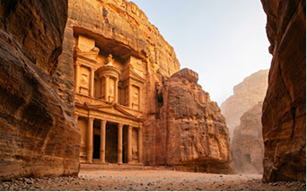
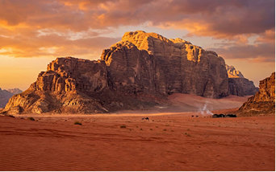
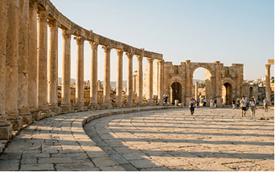
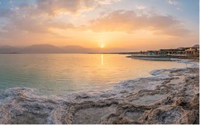
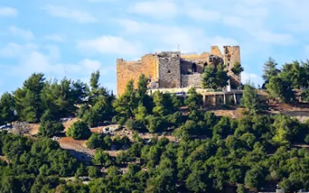
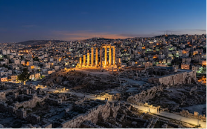
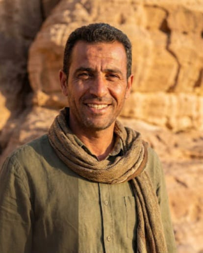

WORLD WONDER
Ma'an Governorate
Petra - Rose City
Discover the ancient Nabataean city carved into rose-colored rock.
Your Jordan. Your Route.

From the rose-red stone monuments of Nabataean Petra to the timeless, star-lit sandstone towers of Wadi Rum and the grand colonnades of Jerash. Jordan is not merely a destination to visit-it is an ancient story to be lived at your own cadence.
Start PlanningA selection of places to help you start discovering the Kingdom.

WORLD WONDERDiscover the ancient Nabataean city carved into rose-colored rock.

DESERT WILDERNESSExperience dramatic desert landscapes and Bedouin culture.

ANCIENT CITYWalk through one of the best-preserved Roman cities in the region.

NATURAL WONDERExplore green hills, forests, and historic landscapes.

ISLAMIC FORTESSDiscover mosaics, churches, and the cultural heritage of the city.

THE TIMELESS CAPITALEnjoy hiking, wildlife, and spectacular mountain scenery.
Choose an experience that matches your travel style.
Taste Jordan through traditional food and local hospitality.
Hike, explore, and experience Jordan's landscapes.
Explore places that tell the story of Jordan.
Dana Biosphere bio-diversity, Mujib river canyouing, and mineral-saturated saltwater lagoons.
Dead sea salt flotation, Ma'in hydrothermal springs, and serene stargazing wellness retreats.
Basalt ruins of Umm Qais overlooking the Galilee, Roman salt paths, and Madaba artisan ateliers.
Tell us how many days you have and what kind of experiences you are looking for. We'll help shape your Jordan route.
Plan My Journey
"We do not simply show you the carved tombs of Petra or the red dunes of Rum; we introduce you to the memory of our ancestors who carved these steps and navigated by these constellations."
Every route created through Jo Routes pairs you with licensed, locally born guides who bring authentic Bedouin hospitality, oral histories, unrecorded vantage points, and warm fireside companionship to your private expedition.